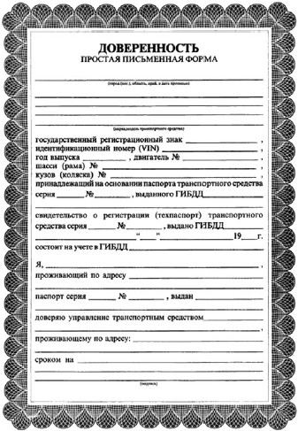
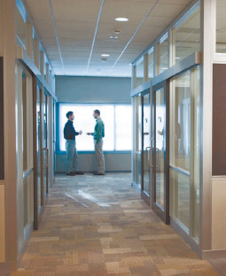

Как избежать неприятностей
Не секрет, что покупателя автомобиля подстерегает множество опасностей, и не последняя из них – ограбление или угон свежеприобретенного автомобиля. Характерно то, что во многих случаях подобных неприятностей можно было бы избежать, если бы покупатели внимательнее относились к своим действиям, а также к действиям продавца.
Например, если вы не уверены, что будете покупать именно этот автомобиль, не стоит говорить его хозяину, что у вас в кармане есть столько-то денег и вы хотите купить машину именно за эту сумму (рис. 1.17). Совершенно ни к чему, чтобы посторонние знали о том, что в настоящее время вы представляете собой «ходячий кошелек».
Рис. 1.17. Не стоит говорить продавцу, что у вас при себе определенная сумма денег
Если возле приглянувшегося вам автомобиля нет хозяина, ограничивайтесь только внешним осмотром до тех пор, пока он не появится. Категорически не рекомендуется открывать салон чужого автомобиля в отсутствие продавца: в противном случае вы можете попасть в серьезную неприятность. Например, хозяин машины, застав в салоне постороннего человека, может заявить, что в автомобиле лежала крупная сумма денег и теперь она пропала. В данном случае все улики укажут на незадачливого покупателя: на дверце машины, которую он открывал, останутся его отпечатки пальцев, также они могут остаться на элементах салона (руле, рычаге КПП, приборном щитке и др.). А если в кармане покупателя при всем этом лежит крупная сумма денег (что вполне объяснимо – человек же собрался покупать машину!), его дела могут оказаться весьма плохи.
Совет
Настоятельно рекомендуется перед тем, как открыть дверцу машины и сесть в салон, спросить разрешение у хозяина автомобиля. Также следует спрашивать разрешение при выполнении любых других действий по отношению к чужой машине: запуск двигателя, осмотр багажника и пространства под капотом и др.
Многие наши соотечественники, сгорая от нетерпения поскорее стать обладателем собственного автомобиля, не желают тратить время на оформление автомобиля в ГИБДД сразу после его покупки, а соглашаются купить машину по генеральной доверенности (рис. 1.18). Такая поспешность может привести к тому, что вы приобретете автомобиль «с проблемами» (например, числящийся в угоне), которые могли бы выявиться на этапе снятия машины с учета в ГИБДД.

Рис. 1.18. Форма генеральной доверенности на автомобиль
В подавляющем большинстве случаев брать с собой деньги (особенно если вы планируете купить машину на автомобильном рынке) не рекомендуется. В основном это касается тех, кто едет на рынок в первый раз, по большей части в ознакомительных целях.
В первую очередь не стоит забывать, что любой рынок, в том числе и автомобильный, является «местом работы» профессиональных воров и мошенников, лучшая защита от которых – это пустые карманы. В настоящее время у этих любителей легкой наживы существует вагон и маленькая тележка разнообразных приемов и хитростей, с помощью которых они выманивают у незадачливых покупателей машин имеющиеся у них при себе деньги.
Кроме того, деньги можно элементарно потерять, например доставая из кармана пачку сигарет или ручку с блокнотом (чтобы записать номер телефона продавца).
Отсутствие при себе денег может сыграть решающую и положительную роль также в случае, когда целесообразно отказаться от покупки осмотренного автомобиля. Не секрет, что многие продавцы машин по своей сути являются неплохими психологами и могут быстро склонить человека к покупке автомобиля. В этот момент покупатель может полностью не осознавать, что от этой машины лучше отказаться: у него над ухом что-то щебечет продавец, автомобиль с виду приличный, в кармане лежит нужная сумма денег, и он принимает решение о покупке. А если бы у покупателя денег с собой не было, наверняка все закончилось бы так: если машина очень понравилась, он взял бы у продавца телефон, а дома еще раз хорошенько обдумал целесообразность покупки.
Однако нельзя не отметить и тот момент, что в некоторых случаях наличие при себе денег может сыграть положительную роль. Например, многие продавцы соглашаются снизить цену, когда покупатель говорит, что деньги у него при себе и он готов рассчитаться хоть сейчас. Причем размер этой скидки может быть довольно ощутимым, и продавец никогда не предоставил бы ее покупателю, который не предложил бы немедленный расчет.
В любом случае, если вы отправляетесь покупать машину и берете с собой деньги, пригласите напарника из числа близких людей. Даже если он не разбирается в автомобилях – не стоит разгуливать в одиночку с большой суммой денег в кармане.
Один из распространенных и популярных у аферистов способов мошенничества заключается в том, что у покупателя угоняется только что приобретенный им автомобиль и это происходит либо во время, либо сразу после продажи. Причем зачастую покупатель не может в милиции доказать, что машина уже принадлежит именно ему, поскольку документы ему вручаются заведомо поддельные.
На практике это выглядит примерно следующим образом. Обычно данное преступление совершается не одним, а как минимум двумя мошенниками. Первый из них завлекает покупателя необычно низкой ценой продаваемой машины. Предложение настолько выгодное, что, как говаривал небезызвестный дон Корлеоне, он него невозможно отказаться.
Стремление купить автомобиль в отличном состоянии по чрезвычайно низкой цене затмевает здравый смысл, и человек соглашается на покупку.
После осмотра автомобиля покупателем и принятия им решения о покупке заинтересованные стороны отправляются оформлять сделку. Со стороны все выглядит как обычно, только с той существенной разницей, что покупателю вручаются фальшивые документы на автомобиль (технический паспорт, справка-счет и др.). Кстати, для оформления фальшивой справки-счета у мошенников может быть «свой человек» в автомобильном магазине или в другой организации, которая имеет право оформлять сделки по купле-продаже автомобилей.
Внимание
При совершении подобного мошенничества покупатель рассчитывается с продавцом не сидя в машине, как это бывает в большинстве случаев, а где-то в другом месте, куда его приглашает продавец. Это место не вызывает у клиента никаких опасений: например, это может быть закуток в коридоре здания, где оформлялась покупка машины (рис. 1.19), или другой автомобиль (продавец мотивирует это тем, что, мол, он боится садиться с незнакомым человеком в продаваемую машину, поскольку по документам она уже продана) Так делается для того, чтобы была возможность угона проданной машины, пока покупатель занят оформлением сделки.

Рис. 1.19. Закуток в коридоре – не лучшее место для расчета с продавцом
Итак, покупатель передает продавцу деньги за машину, тот их внимательно пересчитывает и отдает покупателю документы на автомобиль и ключи. Поскольку документы подделаны очень квалифицированно, у покупателя не возникает никаких опасений, а то, что ключи могут быть поддельные, у него и в мыслях нет.
Купленный автомобиль угоняется сообщником продавца либо в момент передачи денег, либо уже после того, как покупатель попрощался с продавцом и направился с документами и ключами к «своей» машине. В последнем случае преступление совершается, как принято говорить, с особым цинизмом, поскольку машину у незадачливого покупателя уводят прямо из-под носа.
Конечно, честному человеку приходится очень тяжело, когда он имеет дело с мошенниками. Но все же не стоит самому приглашать мошенников и облегчать им работу, являясь на рынок с деньгами и в одиночестве, не проверяя документы, небрежно осматривая автомобиль и т. д.